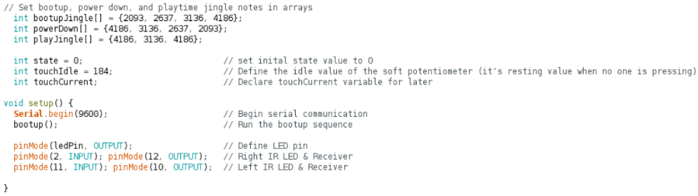
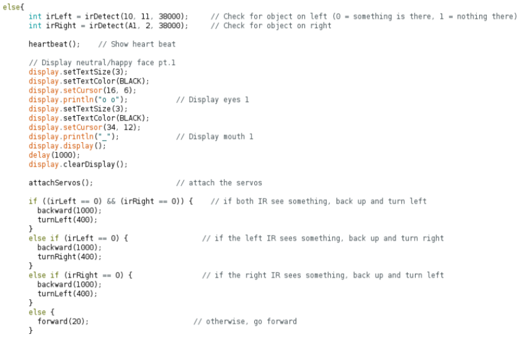
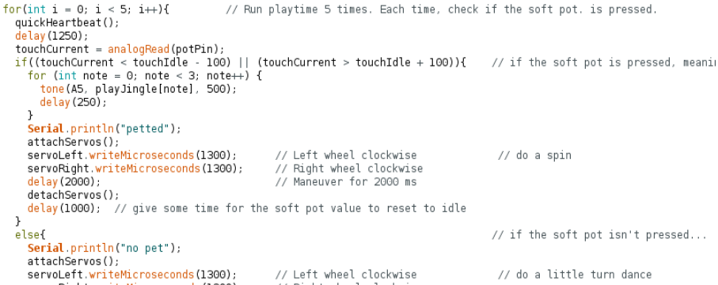
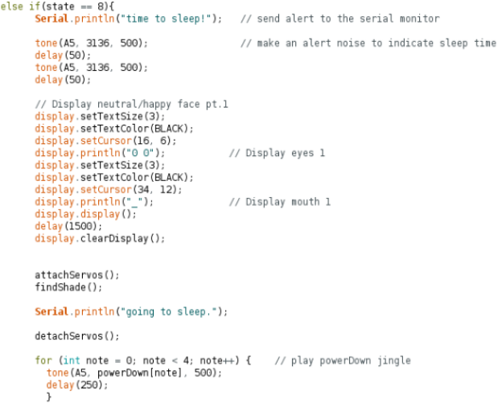

Pet BOE Bot

Pet BOE Bot is an interactive 'pet' robot that was built in approx. 2 weeks for a final project in a computer engineering course. The robot includes an LCD screen 'face', audio feedback, an LED 'heartbeat', sensors to gather information on it's surroundings, and different pet 'states' to interact with the robot in.
The goal of this project was to converge all of my computer engineering knowledge at the time into a single project — using hardware such as Arduinos and a variety of sensors (IR, touch, and more) as well as software in order to make everything work together (programmed in C).

Here is a list of parts for this project:
- 1x BOE Bot
- 1x Arduino Mega
- 1x Nokia 5110 LCD
- 1x Piezo Buzzer
- 2x LEDs
- 2x Photoresistors
- 2x IR LEDs
- 2x IR Receivers
- 1x Soft Potentiometer
- A whole bunch of wires
- Many 10k, 1k, and 220 ohm resistors
Features
The face of your pet is the screen located on the front. It will show your pet’s emotions through it’s different states (casual, playtime, and sleeptime). Use this to know how your pet is feeling!
The heart of your pet is located just to the left of its face. Keep an eye on this to ensure that your pet is alive and well - incase it wasn’t already obvious!
The mouth of your pet allows your pet to speak to you! Pay close attention to your bot so you know when they wake up or go to sleep. Or maybe even when they want to play.
The eyes of your pet helps your pet to find a nice, quiet, dark place to sleep when they get tired.
The hands of your pet make it so your pet doesn’t run into anything in front of them. Sometimes they’ll get distracted and bump into something, but for the most part, they do pretty well for being a robot.
The head of your bot is where you give all those scratches and head rubs. Try petting here when your bot is having fun during playtime, or when they are sleeping, as they may not pay attention to you when they are roaming around and exploring their surroundings.
How does it work?
Your new PET BOE BOT is designed to keep you company around the house. The bot has several convenient features, including multiple sensors to gather information about its surroundings, and ways of showing the emotion or state of the pet itself. Here’s a list of all it’s features:
HARDWARE
The hardware of the bot consists of all of the parts listed above. All of the parts fit onto the mini breadboard attached to the BOE bot, and a breadboard that was put onto the front of the bot for more space. All wires are colour coded to fit the part they are assigned to (red = power, black = ground, green = LED/piezo, blue = Nokia screen, yellow = IR sensors, white = soft potentiometer). Here are some closer pictures of the wiring:
SOFTWARE
The code that the bot operates on has 3 main “phases". The first phase is roaming mode, where the bot roams around and tries not to bump into its surroundings. The second phase is playtime, where you can pet your bot! The third and final phase is sleep time, for when your bot gets tired. They will try to find a nice dark place to sleep, and then rest for a bit.
Bootup
The bootup sequence ensures that all the libraries (servo, adafruit for screen) are in place, that the Nokia 5110 screen, LEDs, IR LEDs and receivers, and the servos are assigned to the correct pins, as well as defining the jingle arrays and the int variables. The bootup function turns on the screen and shows the starting info.

Roaming phase
The main idea of the roaming phase is to show the normal paced heartbeat, as well as the roaming “faces”. It also checks the IR sensors for anything in front of the bot, and if there is anything, it will make an attempt to get out of the way. The roaming phase is located inside of the main loop function, and doubles up on the emote/IR check in the same loop function in order for the faces to change properly. This roaming phase will go for 4 loops.

Playtime phase
Once the roaming phase has gone 4 times, it will enter the playtime mode. After a little jingle, the main playtime code will loop 5 times. During these loops, the soft potentiometer will be checked to see if it is being interacted with. If it is, the bot will acknowledge it with a sound and a dance. If not, the bot will do a small side to side dance. After 5 loops of playtime, the bot will return to the roaming phase for another 3 loops.

Sleeping phase
Once the state value is at 8, the bot enters sleep mode. The bot will change faces and start using it’s photoresistors to find a dark place to sleep at. After several seconds, the bot will “power down” with a jingle and stop moving. The bot will then sleep for 10 seconds until it wakes up, and the whole process starts over again (state value is set to 0 at the end).
